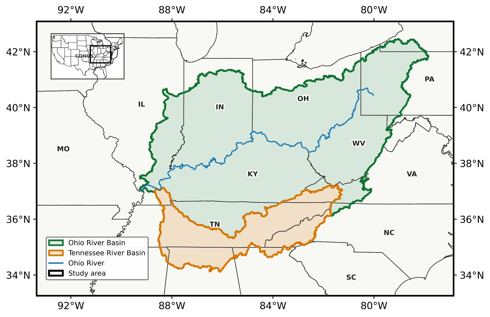

Severe storms & machine learning
A 30-year ERA5 framework for estimating tornado, severe-hail, and severe-wind occurrence across the Ohio River Basin.
Ohio River Basin · 1996–2025Submitted to AIES
Atmospheric Scientist · WKU
Understanding the atmosphere.
Making sense of extremes.
I study severe weather and climate extremes using atmospheric physics, machine learning, and large-scale environmental data.

From atmospheric environments
to severe-weather probabilities.
Selected work
A 30-year ERA5 framework for estimating tornado, severe-hail, and severe-wind occurrence across the Ohio River Basin.

A 75-year observational analysis of compound drought–heat-wave occurrence, severity, and sensitivity to event definitions.

Station-based seasonality, ERA5 evaluation, long-term trends, and the relationship between climate suitability and visitor arrivals.
A little about me
I am an M.S. researcher in Geological Sciences at Western Kentucky University, working with the NSF Kentucky EPSCoR CLIMBS project. My research connects severe-storm environments, climate variability, and probabilistic hazard prediction.
My work spans the Ohio River Basin, the wider United States, and Ghana—from large-scale reanalysis and climate-model workflows to station observations and regional weather simulations.
I work with Python, xarray, MetPy, scikit-learn, and XGBoost, using NCAR’s Derecho and Casper systems and TACC’s Stampede3 for atmospheric data processing.
Explore my research approach ↗Recent work
107 ERA5 diagnostics, two ensemble models, and independent testing for three hazards.
Updated station seasonality, ERA5 evaluation, trends, and tourism-arrival context.
Severe-weather case studies for the CLIMBS research showcase in Lexington.